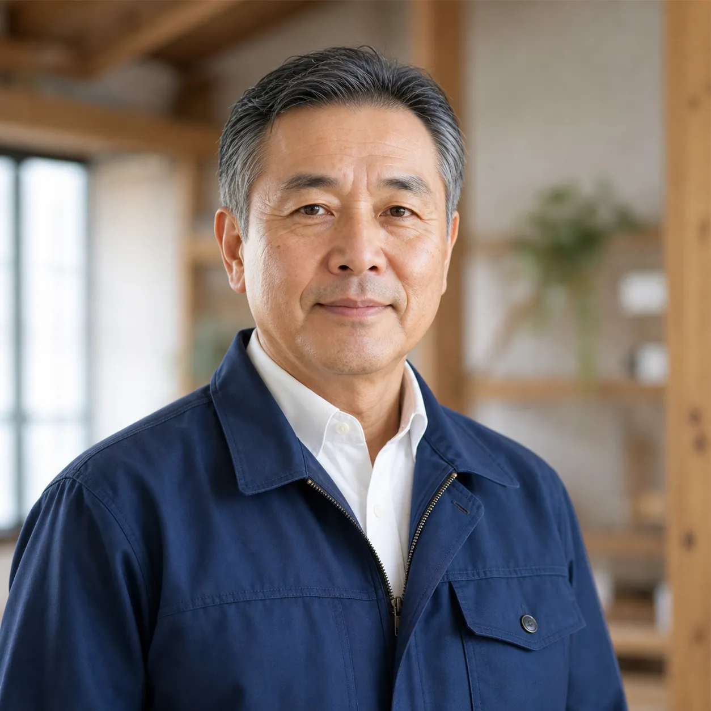

ABOUT US
会社概要
「暮らしを紡ぐ」を理念に、地域のお客様と歩んできたつむぎ工務店のご紹介です。

GREETING
代表あいさつ
「家は完成した日がゴールではなく、暮らしが始まるスタートライン。」
創業以来、私たちは一貫して「素材」と「対話」を大切にしてきました。木という生きた素材と向き合い、住まい手であるご家族の声に耳を傾ける。その積み重ねが、長く愛される住まいをつくると信じています。これからも、つむぎ工務店は地域の皆さまと共に、一邸一邸に誠実に向き合ってまいります。
代表取締役 紬 一郎
HISTORY
沿革
01
1998年
つむぎ工務店 創業
つむぎ市緑町にて、木造住宅の設計・施工を専門とする工務店として創業。
02
2006年
自然素材専門ショールームを開設
国産無垢材・自然塗料を実際に見て触れられる常設展示スペースを開設。
03
2013年
リフォーム事業部を新設
新築だけでなく、既存住宅の改修・耐震補強にも対応を拡大。
04
2020年
累計施工実績200棟を達成
地域のお客様に支えられ、累計施工実績が200棟を突破。
05
2026年
創業28年目
「暮らしを紡ぐ」を理念に、現在も地域密着で家づくりを続けています。
COMPANY DATA
会社概要
| 会社名 | 株式会社つむぎ工務店(デモ企業) |
|---|---|
| 所在地 | 〒000-0000 架空県つむぎ市緑町1-2-3 |
| 代表者 | 代表取締役 紬 一郎 |
| 設立 | 1998年4月 |
| 資本金 | 2,000万円 |
| 従業員数 | 35名(2026年4月現在) |
| 事業内容 | 木造注文住宅の設計・施工、リフォーム・リノベーション、外構工事、木材コーディネート |
| 許認可 | 建設業許可(架空)第000000号 |
ORGANIZATION
組織図
代表取締役
設計部
施工管理部
営業・広報部
アフター管理部
ACCESS
アクセス
〒000-0000 架空県つむぎ市緑町1-2-3 ／ つむぎ駅 徒歩8分 ／ 駐車場5台完備
※本サイトはデモのため、地図は架空住所のイメージ表示です。